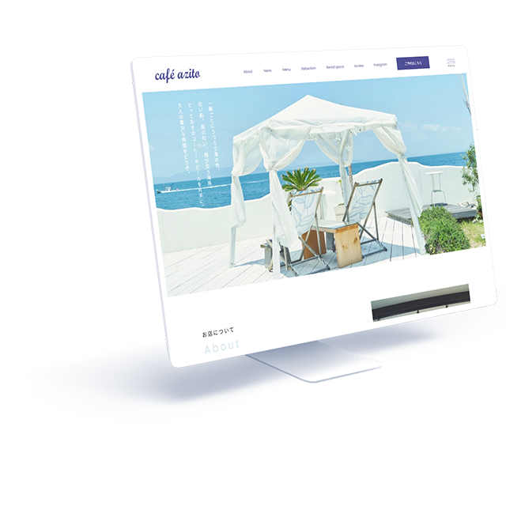

WORKS-03
03
cafe azito
cafe azito
コーポレートサイト
- 担当範囲
- デザイン、コーディング
- 使用言語・ソフト
- HTML(LS)、CSS3、Adobe XD、Photoshop
- 対応機種
- パソコン
- 制作期間
- デザイン7時間、コーディング10時間

海の見えるカフェであることが大きな魅力のひとつであるため、ファーストビューに海が入った写真を選定し、ロケーションがイメージしやすいようにしました。
- サイト概要
- カフェのウェブサイトリニューアル
- クライアント・依頼内容（想定）
- リニューアル前のサイトは、レイアウトが単調なため各カテゴリーのコンテンツが分かりづらい、無理やりシングルページで収めようとしているので情報を取得しにくいといった問題を抱えていた。
そのため、サイトの構成を分かりやすくリニューアルしたいとの希望。
前述のの問題を解消するようなデザインとしたいほか、コンテンツにSNS（Instagram）を追加してほしいとの希望あり。 - ターゲット層
- 20～30代女性
- サイトデザインの方向性
- 元サイトの良い部分は残しつつ、サイトの構成を分かりやすくすることでクオリティをブラッシュアップする。
- 制作意図・工夫した点
-
サイト構成の再構築が主な目的でしたが、下層ページがあるサイトの練習も兼ねて制作したサイトです。
元サイトの魅力である水色と白を基調とした爽やかな色調はそのまま活かしつつ、レイアウトやサイト構成をよりシンプルに組み直しました。
「利用者へのお願い」の文章は、リニューアル前はスライドメニューのように横から展開してくるコンテンツとしてトップページに置かれていましたが、テキスト量が非常に多く、また基本的にサイト訪問初回時のみ目を通せばよい性質のものであるため、独立したコンテンツとして下層ページへ移動し、トップページの店舗紹介（ABOUT）内にリンクボタンを設置する構成に変更しました。